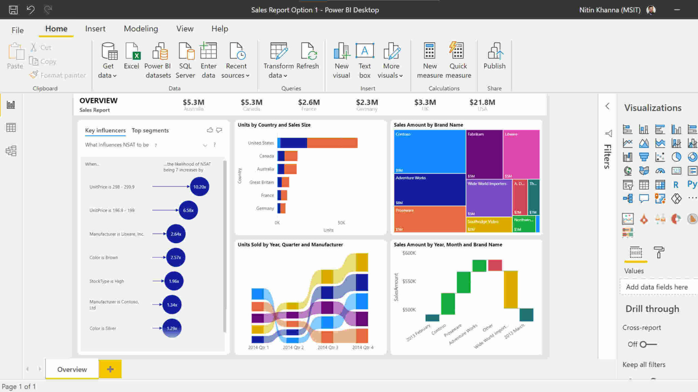

This page contains
Power BI related projects
Resources related to Power BI
Power BI Projects
may be found here.

Power BI has revolutionized the world of business intelligence by making data visualization, reporting, and analytics more accessible and interactive than ever before. As a powerful tool from Microsoft, Power BI empowers users to connect to a wide range of data sources, transform raw data into meaningful insights, and share those insights across their organization with ease.
Power BI’s impact is evident across industries such as finance, retail, manufacturing, healthcare, and beyond. Whether it’s creating real-time dashboards to monitor business performance, analyzing sales trends, or building custom reports for executive decision-making, Power BI helps professionals at every level turn complex data into clear, actionable visuals.
The platform’s drag-and-drop interface, robust DAX formula language, and seamless integration with Microsoft Excel, SQL databases, cloud services, and APIs make it a versatile solution for both analysts and business users. With features like Power Query, interactive visuals, and secure cloud publishing, Power BI transforms static data into dynamic stories that drive smarter strategies.
In the age of data-driven decision-making, proficiency in Power BI is a vital skill for anyone seeking to communicate insights effectively and add value in any analytical role. Mastering Power BI means unlocking the power of your data and telling stories that inspire action and innovation.